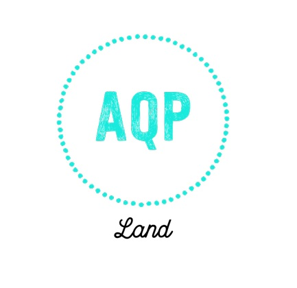

Site Purpose
AQP is the abreviation of Arequipa City, is the second biggest city of Peru. This page want to join the traditional bussines around the city. People here are very traditional and love the the costums and many bussines aproach this fellings. We want to show the people of city and tourism the prducts and services of Arequipa and we we want to help bussines to work together.
Domain:
www.aqpland.com
